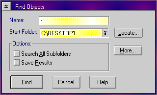

The Workplace Shell has a Find tool that allows you to search for objects based on several criteria. Every container pop-up menu in the system has a Find Objects dialog. The following figure shows the Find Objects dialog: 
You use the Find Objects dialog to search for objects by their names, or by selecting the More push button and by specifying several criteria. The Find Objects dialog comes with default values:
Default Values
The Locate dialog contains five options:
Option